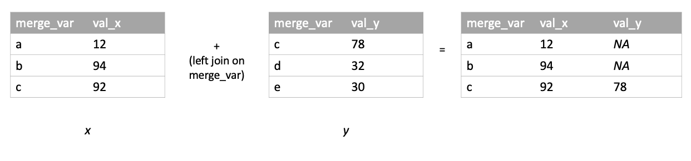
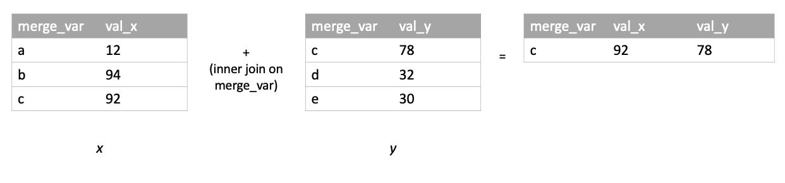
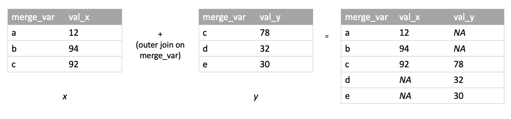

Chapter 5 Combine, Reshape and Merge
This chapter looks at various strategies for combining, reshaping, and merging data.
5.1 Combine rows
Combining rows may be thought of as “stacking” rectangular data structures.
Python
R
The rbind() function “binds” rows. It takes two or more objects. To row bind data frames the column names must match, otherwise an error is returned. If columns being stacked have differing variable types, the values will be coerced according to logical < integer < double < complex < character. (E.g., if you stack a set of rows with type logical in column J on a set of rows with type character in column J, the output will have column J as type character.)
> d1 <- data.frame(x = 4:6, y = letters[1:3])
> d2 <- data.frame(x = 3:1, y = letters[4:6])
> rbind(d1, d2)
x y
1 4 a
2 5 b
3 6 c
4 3 d
5 2 e
6 1 fSee also the bind_rows() function in the dplyr package.
5.2 Combine columns
Combining columns may be thought of as setting rectangular data structures next to each other.
Python
R
The cbind() function “binds” columns. It takes two or more objects. To column bind data frames, the number of rows must match; otherwise, the object with fewer rows will have rows “recycled” (if possible) or an error will be returned.
> d1 <- data.frame(x = 10:13, y = letters[1:4])
> d2 <- data.frame(x = c(23,34,45,44))
> cbind(d1, d2)
x y x
1 10 a 23
2 11 b 34
3 12 c 45
4 13 d 44> # example of recycled rows (d1 is repeated twice)
> d1 <- data.frame(x = 10:13, y = letters[1:4])
> d2 <- data.frame(x = c(23,34,45,44,99,99,99,99))
> cbind(d1, d2)
x y x
1 10 a 23
2 11 b 34
3 12 c 45
4 13 d 44
5 10 a 99
6 11 b 99
7 12 c 99
8 13 d 99See also the bind_cols() function in the dplyr package.
5.3 Reshaping data
The next two sections discuss how to reshape data from wide to long and from long to wide. “Wide” data are structured such that multiple values associated with a given unit (e.g., a person, a cell culture, etc.) are placed in the same row:
name time_1_score time_2_score
1 larry 3 0
2 moe 6 3
3 curly 2 1Long data, conversely, are structured such that all values are contained in one column, with another column identifying what value is given in any particular row (“time 1,” “time 2,” etc.):
id time score
1 larry 1 3
2 larry 2 0
3 moe 1 6
4 moe 2 3
5 curly 1 2
6 curly 2 1Shifting between these two data formats is often necessary for implementing certain statistical techniques or representing data with particular visualizations.
5.3.1 Wide to long
Python
R
In base R, the reshape() function can take data from wide to long or long to wide. The tidyverse also provides reshaping functions: pivot_longer() and pivot_wider(). The tidyverse functions have a degree of intuitiveness and usability that may make them the go-to reshaping tools for many R users. We give examples below using both base R and tidyverse.
Say we begin with a wide data frame, df_wide, that looks like this:
id sex wk1 wk2 wk3
1 1 m 16 7 15
2 2 m 12 19 10
3 3 f 8 15 7To lengthen a data frame using reshape(), a user provides arguments specifying the columns that identify values’ origins (person, cell culture, etc.), the columns containing values to be lengthened, and the desired names for output columns in long data:
> df_long <- reshape(df_wide,
+ direction = 'long',
+ idvar = c('id', 'sex'), # column(s) that uniquely identifies/y each row
+ varying = c('wk1', 'wk2', 'wk3'), # variables that contain the values to be lengthened
+ v.names = 'val', # desired name of column in long data that will contain values
+ timevar = 'week') # desired name of column in long data that will identify each value's context
> df_long
id sex week val
1.m.1 1 m 1 16
2.m.1 2 m 1 12
3.f.1 3 f 1 8
1.m.2 1 m 2 7
2.m.2 2 m 2 19
3.f.2 3 f 2 15
1.m.3 1 m 3 15
2.m.3 2 m 3 10
3.f.3 3 f 3 7The tidyverse function for taking data from wide to long is pivot_longer(). To lengthen df_wide using pivot_longer(), a user would write:
> library(tidyverse)
> df_long_PL <- pivot_longer(df_wide,
+ cols = -c('id', 'sex'), # columns that contain the values to be lengthened (can use -c() to negate variables)
+ names_to = 'week', # desired name of column in long data that will identify each value's context
+ values_to = 'val') # desired name of column in long data that will contain values
> df_long_PL
# A tibble: 9 × 4
id sex week val
<int> <chr> <chr> <int>
1 1 m wk1 16
2 1 m wk2 7
3 1 m wk3 15
4 2 m wk1 12
5 2 m wk2 19
6 2 m wk3 10
7 3 f wk1 8
8 3 f wk2 15
9 3 f wk3 7pivot_longer() is particularly useful (a) when dealing with wide data that contain multiple sets of repeated measures in each row that need to be lengthened separately (e.g., two monthly height measurements and two monthly weight measurements for each person) and (b) when column names and/or column values in the long data need to be extracted from column names of the wide data using regular expressions.
For example, say we begin with a wide data frame, animals_wide, in which every row contains two values for each of two different measures:
animal lives_in_water jan_playfulness feb_playfulness jan_excitement feb_excitement
1 dolphin TRUE 6.0 5.5 7.0 7.0
2 porcupine FALSE 3.5 4.5 3.5 3.5
3 capybara FALSE 4.0 5.0 4.0 4.0pivot_longer() can be used to convert this data frame to a long format where there is one column for each of the measures, playfulness and excitement:
> animals_long_1 <- pivot_longer(animals_wide,
+ cols = -c('animal', 'lives_in_water'),
+ names_to = c('month', '.value'), # ".value" is placeholder for strings that will be extracted from wide column names
+ names_pattern = '(.+)_(.+)') # specify structure of wide column names with regex from which long column names will be extracted
> animals_long_1
# A tibble: 6 × 5
animal lives_in_water month playfulness excitement
<chr> <lgl> <chr> <dbl> <dbl>
1 dolphin TRUE jan 6 7
2 dolphin TRUE feb 5.5 7
3 porcupine FALSE jan 3.5 3.5
4 porcupine FALSE feb 4.5 3.5
5 capybara FALSE jan 4 4
6 capybara FALSE feb 5 4 Alternatively, pivot_longer() can be used to convert this data frame to a long format where there is one column containing all the playfulness and excitement values:
> animals_long_2 <- pivot_longer(animals_wide,
+ cols = -c('animal', 'lives_in_water'),
+ names_to = c('month', 'measure'),
+ names_pattern = '(.+)_(.+)',
+ values_to = 'val')
> animals_long_2
# A tibble: 12 × 5
animal lives_in_water month measure val
<chr> <lgl> <chr> <chr> <dbl>
1 dolphin TRUE jan playfulness 6
2 dolphin TRUE feb playfulness 5.5
3 dolphin TRUE jan excitement 7
4 dolphin TRUE feb excitement 7
5 porcupine FALSE jan playfulness 3.5
6 porcupine FALSE feb playfulness 4.5
7 porcupine FALSE jan excitement 3.5
8 porcupine FALSE feb excitement 3.5
9 capybara FALSE jan playfulness 4
10 capybara FALSE feb playfulness 5
11 capybara FALSE jan excitement 4
12 capybara FALSE feb excitement 4 5.3.2 Long to wide
Python
R
Say we begin with a long data frame, df_long, that looks like this:
> df_long
id sex week val
1.m.1 1 m 1 16
2.m.1 2 m 1 12
3.f.1 3 f 1 8
1.m.2 1 m 2 7
2.m.2 2 m 2 19
3.f.2 3 f 2 15
1.m.3 1 m 3 15
2.m.3 2 m 3 10
3.f.3 3 f 3 7To take data from long to wide with base R’s reshape(), a user would write:
> df_wide <- reshape(df_long,
+ direction = 'wide',
+ idvar = c('id', 'sex'), # column(s) that determine which rows should be grouped together in the wide data
+ v.names = 'val', # column containing values to widen
+ timevar = 'week', # column from which resulting wide column names are pulled
+ sep = '_') # the `sep` argument allows a user to specify how the contents of `timevar` should be joined with the name of the `v.names` variable to form wide column names
> df_wide
id sex val_1 val_2 val_3
1.m.1 1 m 16 7 15
2.m.1 2 m 12 19 10
3.f.1 3 f 8 15 7The tidyverse function for taking data from long to wide is pivot_wider(). To widen df_long using pivot_longer(), a user would write:
> library(tidyverse)
> df_wide_PW <- pivot_wider(df_long,
+ id_cols = c('id', 'sex'),
+ values_from = 'val',
+ names_from = 'week',
+ names_prefix = 'week_') # `names_prefix` specifies a string to paste in front of the contents of 'week' in the resulting wide column names
> df_wide_PW
# A tibble: 3 × 5
id sex week_1 week_2 week_3
<int> <chr> <int> <int> <int>
1 1 m 16 7 15
2 2 m 12 19 10
3 3 f 8 15 7pivot_wider() offers a lot of usability when widening relatively complicated long data structures. For example, say we want to widen both of the long versions of the animals data frame created above.
To widen the version of the long data that has a column for each of the measures (playfulness and excitement):
> animals_long_1
# A tibble: 6 × 5
animal lives_in_water month playfulness excitement
<chr> <lgl> <chr> <dbl> <dbl>
1 dolphin TRUE jan 6 7
2 dolphin TRUE feb 5.5 7
3 porcupine FALSE jan 3.5 3.5
4 porcupine FALSE feb 4.5 3.5
5 capybara FALSE jan 4 4
6 capybara FALSE feb 5 4
> animals_wide <- pivot_wider(animals_long_1,
+ id_cols = c('animal', 'lives_in_water'),
+ values_from = c('playfulness', 'excitement'),
+ names_from = 'month',
+ names_glue = '{month}_{.value}') # `names_glue` allow for customization of wide column names based
> animals_wide
# A tibble: 3 × 6
animal lives_in_water jan_playfulness feb_playfulness jan_excitement feb_excitement
<chr> <lgl> <dbl> <dbl> <dbl> <dbl>
1 dolphin TRUE 6 5.5 7 7
2 porcupine FALSE 3.5 4.5 3.5 3.5
3 capybara FALSE 4 5 4 4 To widen the version of the long data that has one column containing all the values of playfulness and excitement together:
> animals_long_2
# A tibble: 12 × 5
animal lives_in_water month measure val
<chr> <lgl> <chr> <chr> <dbl>
1 dolphin TRUE jan playfulness 6
2 dolphin TRUE feb playfulness 5.5
3 dolphin TRUE jan excitement 7
4 dolphin TRUE feb excitement 7
5 porcupine FALSE jan playfulness 3.5
6 porcupine FALSE feb playfulness 4.5
7 porcupine FALSE jan excitement 3.5
8 porcupine FALSE feb excitement 3.5
9 capybara FALSE jan playfulness 4
10 capybara FALSE feb playfulness 5
11 capybara FALSE jan excitement 4
12 capybara FALSE feb excitement 4
> animals_wide <- pivot_wider(animals_long_2,
+ id_cols = c('animal', 'lives_in_water'),
+ values_from = 'val',
+ names_from = c('month', 'measure'),
+ names_sep = '_')
> animals_wide
# A tibble: 3 × 6
animal lives_in_water jan_playfulness feb_playfulness jan_excitement feb_excitement
<chr> <lgl> <dbl> <dbl> <dbl> <dbl>
1 dolphin TRUE 6 5.5 7 7
2 porcupine FALSE 3.5 4.5 3.5 3.5
3 capybara FALSE 4 5 4 4 5.4 Merge/Join
The merge/join examples below all make use of the following sample data frames:
> # x
> x
merge_var val_x
1 a 12
2 b 94
3 c 92
> # y
> y
merge_var val_y
1 c 78
2 d 32
3 e 305.4.1 Left Join
A left join of x and y keeps all rows of x and merges rows of y into x where possible based on the merge criterion:

Python
> import pandas as pd
+ pd.merge(x, y, how = 'left')
merge_var val_x val_y
0 a 12.0 NaN
1 b 94.0 NaN
2 c 92.0 78.0R
> # all.x = T results in a left join
> merge(x, y, by = 'merge_var', all.x = T)
merge_var val_x val_y
1 a 12 NA
2 b 94 NA
3 c 92 785.4.2 Right Join
A right join of x and y keeps all rows of y and merges rows of x into y where possible based on the merge criterion:
Python
> import pandas as pd
+ pd.merge(x, y, how = 'right')
merge_var val_x val_y
0 c 92.0 78.0
1 d NaN 32.0
2 e NaN 30.0R
> # all.y = T results in a right join
> merge(x, y, by = 'merge_var', all.y = T)
merge_var val_x val_y
1 c 92 78
2 d NA 32
3 e NA 305.4.3 Inner Join
An inner join of x and y returns merged rows for which a match can be on the merge criterion in both tables:

Python
> import pandas as pd
+ pd.merge(x, y, how = 'inner')
merge_var val_x val_y
0 c 92.0 78.0R
> # by default, merge() executes an inner join
> # (more specifically, a natural join, which is a kind of
> # inner join in which the merge-criterion column is not
> # repeated, despite being initially present in both tables)
> merge(x, y, by = 'merge_var')
merge_var val_x val_y
1 c 92 785.4.4 Outer Join
An outer join of x and y keeps all rows from both tables, merging rows where possible based on the merge criterion:

Python
> import pandas as pd
+ pd.merge(x, y, how = 'outer')
merge_var val_x val_y
0 a 12.0 NaN
1 b 94.0 NaN
2 c 92.0 78.0
3 d NaN 32.0
4 e NaN 30.0R
> # all = T (or all.x = T AND all.y = T) results in an outer join
> merge(x, y, by = 'merge_var', all = T)
merge_var val_x val_y
1 a 12 NA
2 b 94 NA
3 c 92 78
4 d NA 32
5 e NA 30